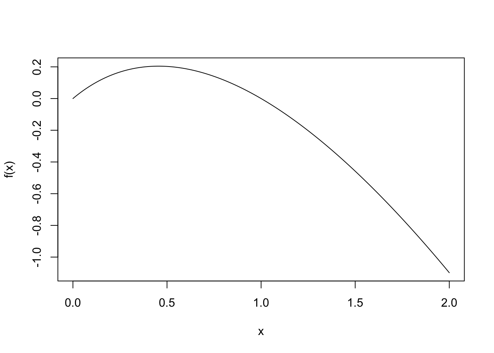

TL;DR
Listen, I’ve made some useful blog posts. I’ve made some silly blog posts. This blog post is absolutely not useful and is perhaps so silly as to be stupid. I’m going to give you the conclusion now: You can do a t-test on the log scale and interpret that as a relative change in means. That is the conclusion of this blog post. There, saved you 10 mins.
Introduction
Little back story to set the stage. I was tasked with writing down some guidance on how to evaluate A/B tests in which our OEC (overall evaluation criterion) is revenue. Revenue is long tailed, so typical justifications for using the t-test (CLT + Berry-Esseen) probably won’t work as well as we want.
What about doing some sort of transform (e.g. \(log\), which for some reason is used to represent \(\ln\) in most statistical texts I’ve read, so I will continute that pattern here). Ok, that can reign in the tail, but there is a small problem: How do I interpret a difference in means on the log scale? Some say to interpret it as a relative change in means on the log scale (essentially just take the exponential of the diference in means to get the relative change), but that is not a mathematical equivalence. Let me demonstrate.
let \(Y_a = Y(A=a)\) be a potential outcome under treatment status \(A=a\). Because exposure is randomly assigned in an A/B test, then \(E[Y \vert A]\) consistently estimates \(E[Y_a]\). A difference in means on the log scale corresponds to the causal contrast
\[ \delta^\star = E[\log(Y_1)] - E[\log(Y_0)] = E\left[ \log \left( \dfrac{Y_1}{Y_0} \right) \right] \>.\]
The relative change in means corresponds to the causal contrast
\[ \delta = \dfrac{E[Y_1]}{E[Y_0]} \]
and generally \(\delta \neq \exp(\delta^\star)\). This is because a) Jensen’s inequality says \(\varphi(E[X]) \leq E[\varphi(X)]\), and b) because \(E[Y/X] \neq E[Y]/E[X]\) (remember, \(E\) is a linear operator).
So this blog post is going to waste both our time by answering some very precise questions:
- What approximations, if any, are neccesarily made to interpret \(\exp(\delta^\star)\) as \(\delta\), and
- Under what conditions are those approximations valid? When might they break?
This is going to be a long one but a good one. This post is going to combine Applied Math + Statistics by way if lots and lots of Taylor Series. Speaking of which, it might be useful to review Taylor Series and their application to functions of random variables.
I can not stress how unimportant this blog post is. Its really just because I find the question compelling. I’d turn back if I were you…

Ok, I warned you.
Taylor Series (or The Reason I Kept My Calculus Text Book)
The Taylor Series of a continuously differentiable function, \(f\), centered at \(t\) is
\[ f(x) = \sum_{k=0}^{\infty} \dfrac{f^{(k)}(t)}{k!} (x-t)^k \quad \mid x - t \mid \lt d \>. \]
The first \(n+1\) terms form the Taylor polynomial of degree \(n\), \(T_n(x)\). The difference between the Taylor Polynomial and the function it approximates is known as the remainder \(R_n(x)\). We can bound \(R_n(x)\), meaning we can bound the error in using \(T_n(x)\) to estimate \(f(x)\). If \(\mid f^{(n+1)}(x) \mid \leq M\) on \(\mid x-t\mid \leq d\) then
\[ \mid R_n(x) \mid \leq \dfrac{M}{(n_1)!}(x-t)^{n+1}\]